Conditions
体の不調解説
31種の不調の原因になる筋と、その対策を3Dの図で紹介します。部位で絞り込めます。
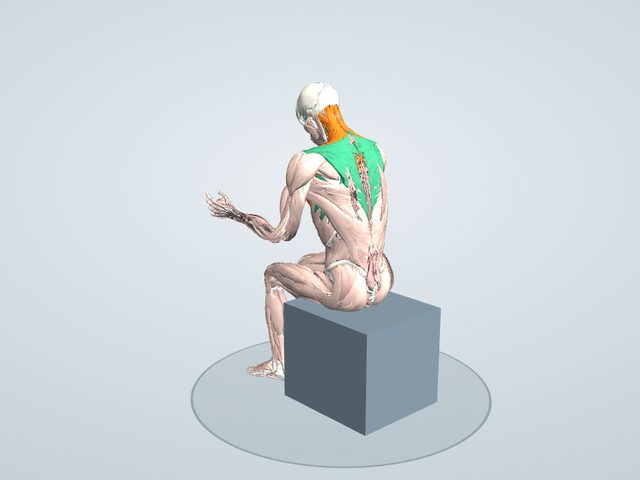
肩こりデスクワークで前かがみ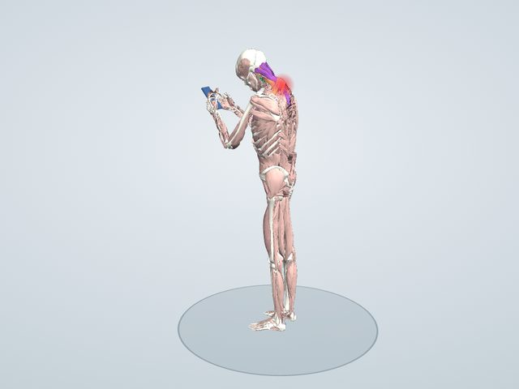
首こり・スマホ首スマホをのぞきこむ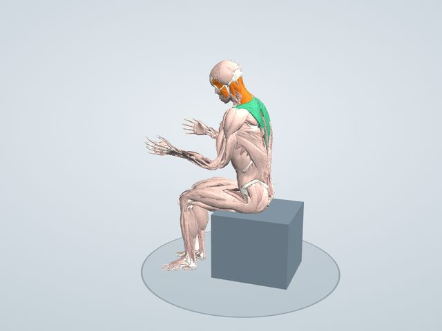
頭痛(緊張型頭痛)首・肩に力が入った前かがみ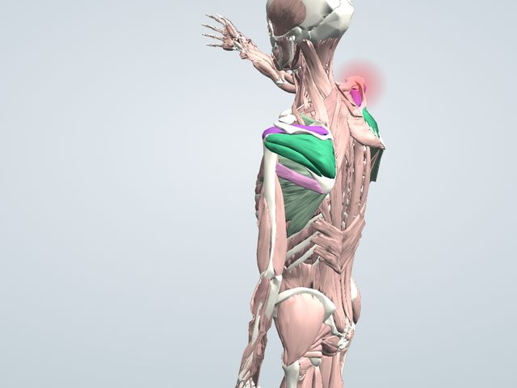
五十肩(肩関節周囲炎)腕を上げようとして肩がすくむ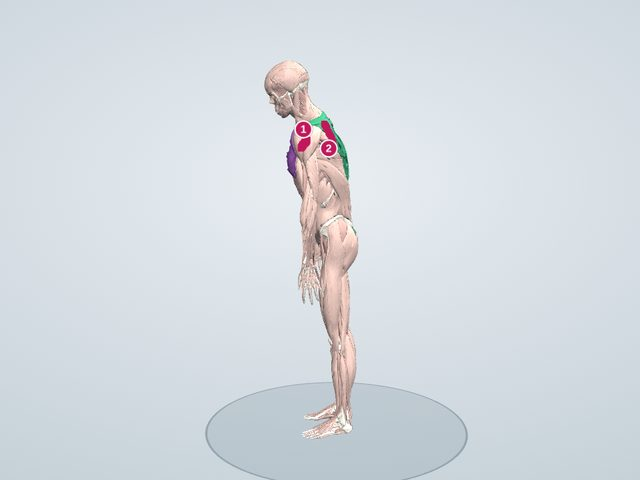
猫背・巻き肩背中が丸まり、肩が前に入る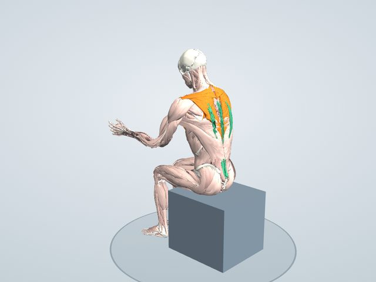
背中のこり(肩甲骨の間)肩が前に出て、肩甲骨が開く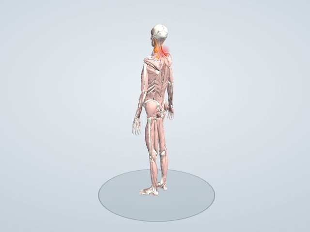
寝違え首を回すと痛む 腰痛前かがみで物を持つ
腰痛前かがみで物を持つ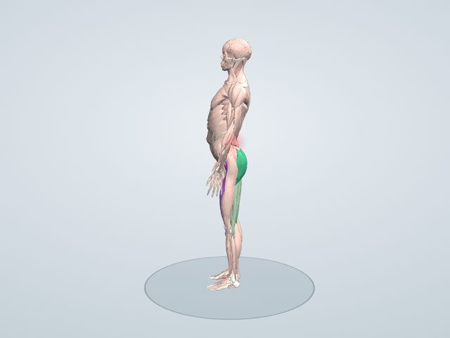
反り腰骨盤が前に傾き、腰が反る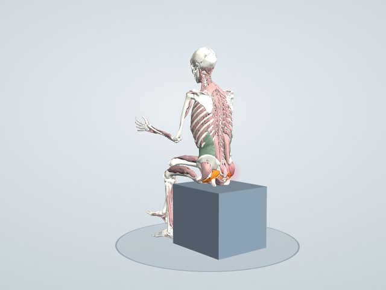
お尻から脚のしびれ(梨状筋症候群)脚を組んで長く座る ぎっくり腰前かがみでひねりながら持ち上げる
ぎっくり腰前かがみでひねりながら持ち上げる 膝の痛み(お皿のまわり)しゃがむときに膝が内に入る
膝の痛み(お皿のまわり)しゃがむときに膝が内に入る 膝の痛み(中高年の膝)膝が伸びきらない立ち方
膝の痛み(中高年の膝)膝が伸びきらない立ち方 ランナー膝(腸脛靭帯炎)片脚の着地で膝が内に入る
ランナー膝(腸脛靭帯炎)片脚の着地で膝が内に入る シンスプリント走る・跳ぶの着地
シンスプリント走る・跳ぶの着地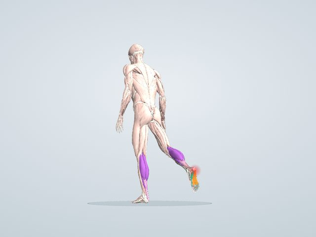
足の裏・かかとの痛み(足底筋膜炎)つま先で地面をける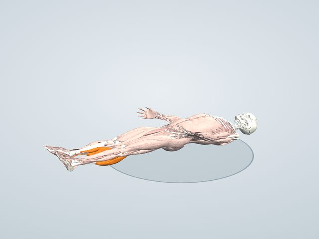
こむら返り(足がつる)寝ていて、つま先が伸びる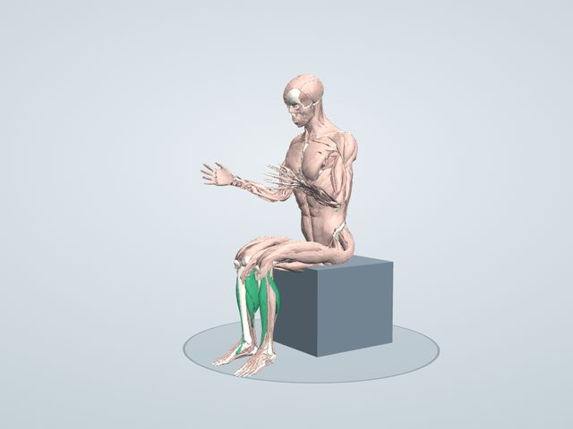
脚のむくみ・冷え長い時間座ったまま動かない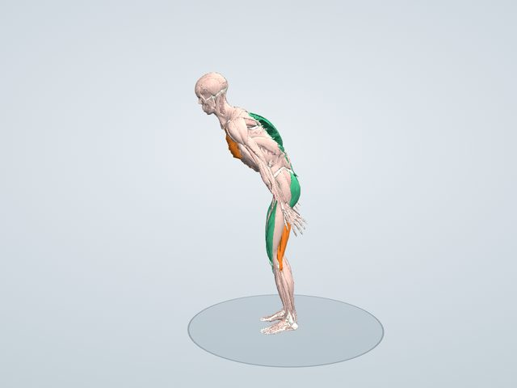
腰が曲がる(高齢者の円背)背中と腰が丸まり、膝が曲がる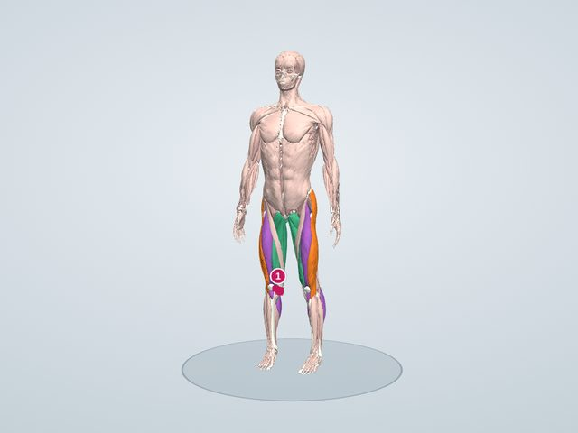
O脚太ももが内にひねられ、膝が離れる ガニ股つま先と膝が外を向いて立つ
ガニ股つま先と膝が外を向いて立つ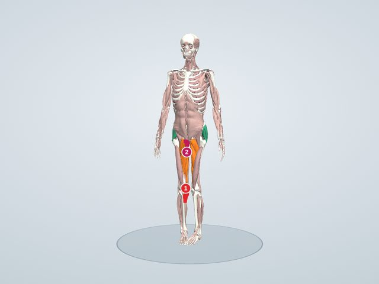
内股(膝が内に入る)膝とつま先が内を向いて立つ 扁平足土踏まずがつぶれ、膝が内に入る
扁平足土踏まずがつぶれ、膝が内に入る 外反母趾前に体重がかかり、膝が内に入る
外反母趾前に体重がかかり、膝が内に入る 開脚ができない脚を開くと骨盤が後ろに倒れる
開脚ができない脚を開くと骨盤が後ろに倒れる 前屈で手が床につかない前屈で骨盤が倒れず、背中だけ丸まる
前屈で手が床につかない前屈で骨盤が倒れず、背中だけ丸まる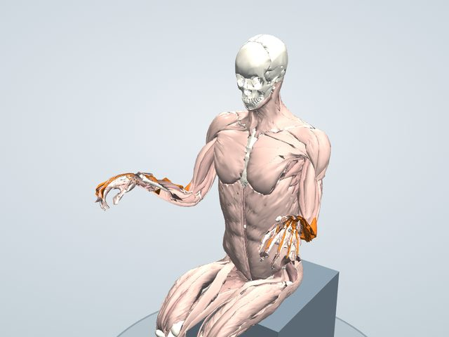
テニス肘(肘の外側の痛み)キーボード・マウスで手首を反らす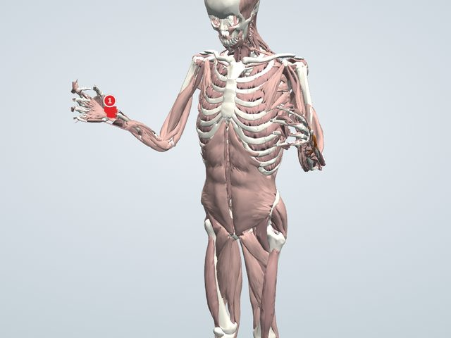
腱鞘炎(手首の親指側)スマホを片手で操作する 野球肘ボールを投げる直前(腕をしならせる)
野球肘ボールを投げる直前(腕をしならせる)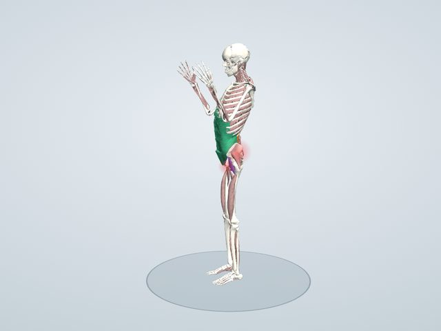
産後の骨盤のゆるみ抱っこで腰を反らせて立つ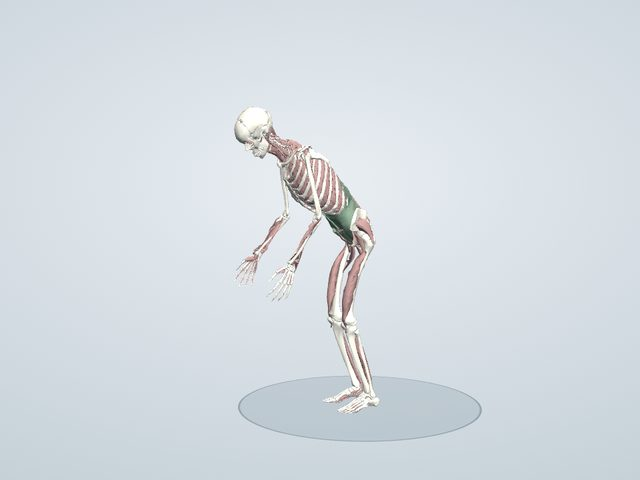
尿もれ(骨盤底筋のゆるみ)重い物を持つ・くしゃみでお腹に力が入る一般的な情報で、診断や治療の代わりにはなりません。痛みが強いとき・続くときは医療機関へ。